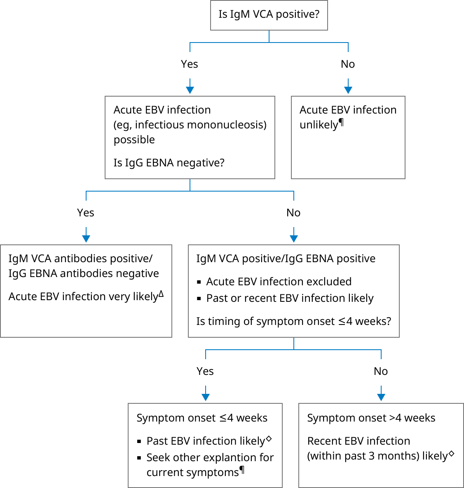

CMV: cytomegalovirus; EBV: Epstein-Barr virus; EBNA: EBV nuclear antigen; HIV: human immunodeficiency virus; IgG: immunoglobulin G; IgM: immunoglobulin M; IM: infectious mononucleosis; PCR: polymerase chain reaction; VCA: viral capsid antigen.
* Serologies are reported as either positive or negative. A negative test for IgM and IgG VCA and for IgG EBNA antibodies indicates no prior exposure in immunocompetent hosts. Interpretation of a specific abnormal test result should be based upon the reference range reported with that result and interpreted in the context of the clinical findings.
¶ Consider testing for other causes of IM-like symptoms if acute EBV infection is unlikely:Δ IgG VCA antibodies may also be detectable at the onset of clinical illness because of the long incubation period. They remain positive for life.
◊ The presence of IgG EBNA antibodies within 4 weeks of mononucleosis symptom onset excludes acute primary EBV infection. IgG EBNA antibodies usually develop after recent infection has resolved and remain positive for life. IgM VCA antibodies usually wane approximately 3 months after onset of clinical illness and are usually negative by the time IgG EBNA antibodies appear, but sometimes overlap. False-positive IgM results may occur with infection with other herpes viruses (eg, CMV) and other illnesses associated with an intense immune response.